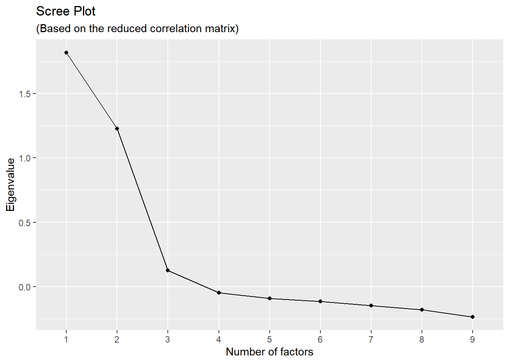

16 Factor analysis with correlation data
Sometimes we only have access to correlation or covariance data. We can perform factor analysis on correlation matrices using nearly the same set of operations.51
16.1 Setting up the data
If we had a full (symmetrical) matrix in a CSV file, we can import these into R. However, it will not be in a matrix format but as a data frame, so we need to use the as.matrix() function and provide names for the columns and rows.
R_df <- read.csv("Week08_GSS_ScienceCorrs.csv")
R <- as.matrix(R_df)
rownames(R) <- colnames(R) <- names(R_df)
names(R_df)## [1] "NoIntrst" "Odd" "NoFun" "Boring" "Alone" "NoRelign" "Better" "Good" "Help"## NoIntrst Odd NoFun Boring Alone NoRelign Better Good Help
## NoIntrst 1.000 0.504 0.454 0.286 0.351 0.292 0.123 0.049 0.006
## Odd 0.504 1.000 0.388 0.303 0.216 0.311 0.138 0.029 0.027
## NoFun 0.454 0.388 1.000 0.261 0.260 0.264 0.113 0.046 0.007
## Boring 0.286 0.303 0.261 1.000 0.252 0.090 -0.136 -0.131 -0.231
## Alone 0.351 0.216 0.260 0.252 1.000 0.096 0.076 0.031 -0.010
## NoRelign 0.292 0.311 0.264 0.090 0.096 1.000 0.067 0.051 0.046
## Better 0.123 0.138 0.113 -0.136 0.076 0.067 1.000 0.470 0.425
## Good 0.049 0.029 0.046 -0.131 0.031 0.051 0.470 1.000 0.402
## Help 0.006 0.027 0.007 -0.231 -0.010 0.046 0.425 0.402 1.000Now we have a matrix, called R, which we can use in our factor analysis functions.
One more step is that we need to specify the n-size, if we have access to that information. Let’s say we knew it was 372.
16.1.1 Some extra stuff: Importing half the correlation matrix
Alternatively, let’s say we were given a file that included only one side of the correlation matrix. Or, we got lazy and instead of manually entering all of the correlations on both sides, we only want to manually enter them on one side, perhaps to avoid typos in our data entry. In this situation, we can import our one-sided correlation matrix and then let R do the work. First, we should be sure the other side has NAs in the cells on the blank side of the matrix. These NAs are easier to type into a CSV file than numbers.
## NoIntrst Odd NoFun Boring Alone NoRelign Better Good Help
## [1,] 1.000 NA NA NA NA NA NA NA NA
## [2,] 0.504 1.000 NA NA NA NA NA NA NA
## [3,] 0.454 0.388 1.000 NA NA NA NA NA NA
## [4,] 0.286 0.303 0.261 1.000 NA NA NA NA NA
## [5,] 0.351 0.216 0.260 0.252 1.000 NA NA NA NA
## [6,] 0.292 0.311 0.264 0.090 0.096 1.000 NA NA NA
## [7,] 0.123 0.138 0.113 -0.136 0.076 0.067 1.000 NA NA
## [8,] 0.049 0.029 0.046 -0.131 0.031 0.051 0.470 1.000 NA
## [9,] 0.006 0.027 0.007 -0.231 -0.010 0.046 0.425 0.402 1We can use the forceSymmetric() function from the Matrix (R-Matrix?) package to turn our one-sided matrix into a symmetric matrix. Also, because the output from that function is a special kind of output, rather than a simple matrix, let’s change its type back to a matrix using R base’s as.matrix() function. Finally, we’ll name the row and columns, using the column names in the RLower data that we imported.
library(Matrix)
# help("forceSymmetric", package = "Matrix")
R <- Matrix::forceSymmetric(RLower, uplo="L")
R <- as.matrix(R)
rownames(R) <- colnames(R) <- colnames(RLower)
R## NoIntrst Odd NoFun Boring Alone NoRelign Better Good Help
## NoIntrst 1.000 0.504 0.454 0.286 0.351 0.292 0.123 0.049 0.006
## Odd 0.504 1.000 0.388 0.303 0.216 0.311 0.138 0.029 0.027
## NoFun 0.454 0.388 1.000 0.261 0.260 0.264 0.113 0.046 0.007
## Boring 0.286 0.303 0.261 1.000 0.252 0.090 -0.136 -0.131 -0.231
## Alone 0.351 0.216 0.260 0.252 1.000 0.096 0.076 0.031 -0.010
## NoRelign 0.292 0.311 0.264 0.090 0.096 1.000 0.067 0.051 0.046
## Better 0.123 0.138 0.113 -0.136 0.076 0.067 1.000 0.470 0.425
## Good 0.049 0.029 0.046 -0.131 0.031 0.051 0.470 1.000 0.402
## Help 0.006 0.027 0.007 -0.231 -0.010 0.046 0.425 0.402 1.000Okay, back to the task at hand:
16.2 Preparatory steps
If all we have is the correlation matrix and n-sizes, we won’t be able to report the descriptive statistics or the assumptions having to do with linearity. We can use most of the same procedures to determine the factorability and the number of factors to retain.
16.2.1 Factorability
We can start with the determinant, to see if the EFA will work. This should be positive.
## [1] 0.1915743We can examine the KMO and Bartlett tests for factorability. The Bartlett test with the correlation also requires we specify the n-size.
## Kaiser-Meyer-Olkin factor adequacy
## Call: KMO(r = R)
## Overall MSA = 0.75
## MSA for each item =
## NoIntrst Odd NoFun Boring Alone NoRelign Better Good Help
## 0.76 0.76 0.82 0.77 0.79 0.81 0.68 0.69 0.71## $chisq
## [1] 606.7354
##
## $p.value
## [1] 8.250062e-105
##
## $df
## [1] 36These are the same results we saw with the raw data.
16.2.2 Number of factors
As we did with the raw data, we can use the eigenComputes() function from the nFactors package to conduct the parallel test. Paradoxically, we set the cor = argument to FALSE. If we set it to TRUE (which is the default), it assumes we are analyzing raw data and that we want it to first turn it into a correlation matrix. We already have a correlation matrix, so we set this to FALSE.
library(nFactors)
ReducedEig <- eigenComputes(R, cor = FALSE, model = "factors")
n_nu <- ncol(R) # The number of variables in our data
n_factors <- length(ReducedEig)
set.seed(123)
paral <- parallel(subject = n_p,
var = n_nu,
rep = 1000,
quantile = .95,
model = "factors")
ParallelAna <- data.frame(Nfactor= 1:n_factors,
ReducedEig,
RandEigM = paral$eigen$mevpea,
RandEig95 = paral$eigen$qevpea)
ParallelAna <- round(ParallelAna, 3)
ParallelAna## Nfactor ReducedEig RandEigM RandEig95
## 1 1 1.816 0.271 0.351
## 2 2 1.228 0.185 0.245
## 3 3 0.127 0.119 0.170
## 4 4 -0.047 0.063 0.105
## 5 5 -0.090 0.011 0.048
## 6 6 -0.113 -0.037 -0.003
## 7 7 -0.148 -0.086 -0.051
## 8 8 -0.179 -0.136 -0.098
## 9 9 -0.237 -0.196 -0.154We observe similar results as with our raw data. The third observed (reduced) eigenvalue is lower than its counterpart at the 95th percentile of the randomly generated data sets.
The Hull method seems to require a data matrix of the raw data, so this method for examining number of factors is not available with correlation data.
We can get the scree plot using same output from the eigenComputes() function we used above (as we did with the raw data in the previous lesson):
scree <- data.frame(Factor_n = as.factor(1:n_factors),
Eigenvalue = ReducedEig)
ggplot(scree, aes(x = Factor_n, y = Eigenvalue, group = 1)) +
geom_point() + geom_line() +
xlab("Number of factors") +
ylab("Eigenvalue") +
labs( title = "Scree Plot",
subtitle = "(Based on the reduced correlation matrix)")
16.3 Performing the factor analysis
We can use the same psych::fa() function we used with the raw data set, but instead use the correlation matrix. We need to specify the number of observations using the n.obs = argument.
The results will not be identical to those in our raw data set because our correlation matrix was based on rounded values, which is typical when we use data from publications or reports.
## Factor Analysis using method = pa
## Call: psych::fa(r = R, nfactors = 2, n.obs = n_p, rotate = "promax",
## fm = "pa")
## Standardized loadings (pattern matrix) based upon correlation matrix
## PA1 PA2 h2 u2 com
## NoIntrst 0.75 0.56 0.44 1.0
## Odd 0.66 0.44 0.56 1.0
## NoFun 0.61 0.37 0.63 1.0
## Boring 0.45 0.28 0.72 1.7
## Alone 0.42 0.17 0.83 1.0
## NoRelign 0.38 0.15 0.85 1.1
## Better 0.70 0.50 0.50 1.1
## Good 0.64 0.41 0.59 1.0
## Help 0.64 0.41 0.59 1.0
##
## PA1 PA2
## SS loadings 1.91 1.39
## Proportion Var 0.21 0.15
## Cumulative Var 0.21 0.37
## Proportion Explained 0.58 0.42
## Cumulative Proportion 0.58 1.00
##
## With factor correlations of
## PA1 PA2
## PA1 1 0
## PA2 0 1
##
## Mean item complexity = 1.1
## Test of the hypothesis that 2 factors are sufficient.
##
## df null model = 36 with the objective function = 1.65 with Chi Square = 606.74
## df of the model are 19 and the objective function was 0.06
##
## The root mean square of the residuals (RMSR) is 0.03
## The df corrected root mean square of the residuals is 0.04
##
## The harmonic n.obs is 372 with the empirical chi square 21.89 with prob < 0.29
## The total n.obs was 372 with Likelihood Chi Square = 22.66 with prob < 0.25
##
## Tucker Lewis Index of factoring reliability = 0.988
## RMSEA index = 0.023 and the 90 % confidence intervals are 0 0.053
## BIC = -89.8
## Fit based upon off diagonal values = 0.99
## Measures of factor score adequacy
## PA1 PA2
## Correlation of (regression) scores with factors 0.88 0.84
## Multiple R square of scores with factors 0.77 0.71
## Minimum correlation of possible factor scores 0.54 0.42If all we have is the correlation matrix, we are, obviously, not able to estimate persons’ factor scores because we have no person-level data.↩︎